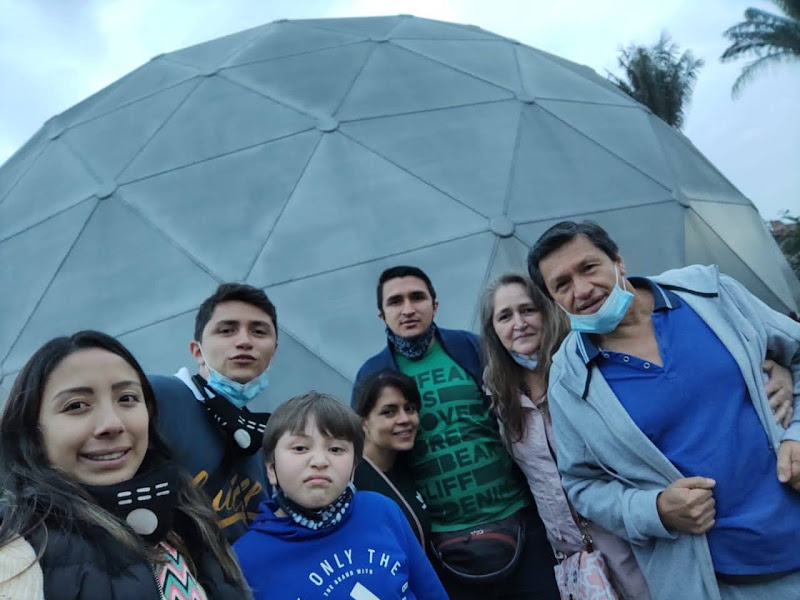
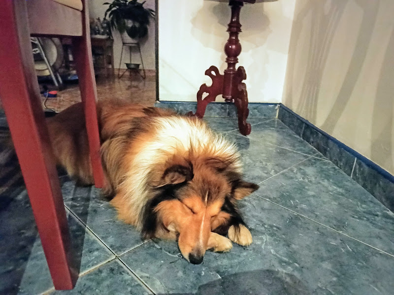
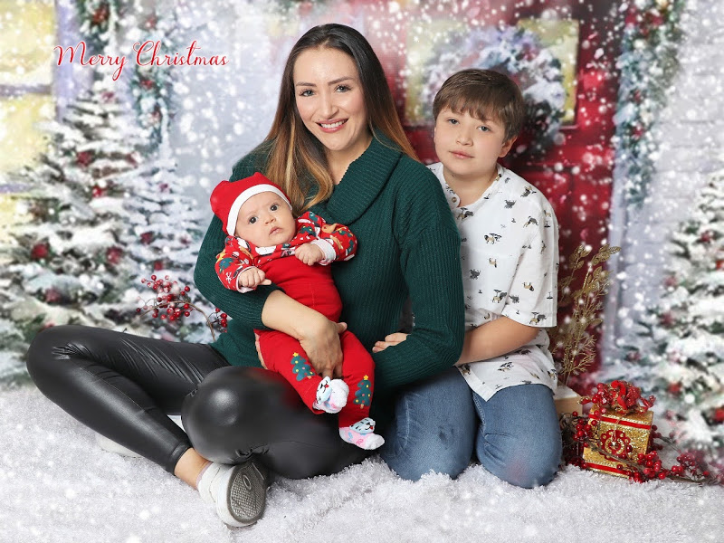
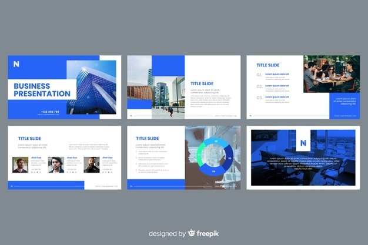
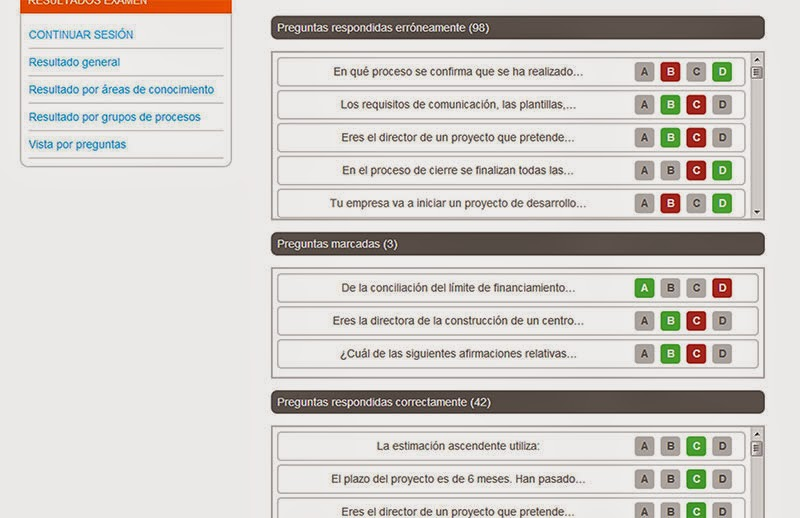

Acerca de mi |
Horario |
Hoja de Vida |
|---|---|---|
Soy una persona activa, me gusta estar aprendiendo constantemente, me considero una persona responsable, honesta, amable, solidaria, y me gusta compartir con las demás personas. Tambien me considero una persona de caracter fuerte y a la vez sensible, pero me gusta ser honesta y mostrar mis emociones. Como independiente me dedico actualmente al diseño y apoyo logístico en una empresa de capacitación de metodologías ágiles. Dentro de mis principales motivaciones en la vida, está mi familia, nos apoyamos mutuamente en todo.
|  |  |  |
|---|
Sobre mi trabajo
Dentro de mis responsabilidades, están el diseño de presentaciones como material para los instructores y estudiantes, la elaboración de simuladores para la preparación de exámenes, y apoyo en el diseño de piezas digitales en ocasiones para redes sociales o página web de la empresa.
|  |  |
|---|